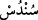
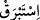
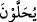
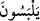
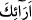
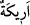
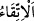

Bunlardan biri altın, biri gümüş ve biri de inci ve yakuttandır. Onlar bu bilezikleri ya
ardarda takacaklar ya da dünyada kadınların yaptıkları gibi hepsini bir arada
takacaklardır.”
Büyüklerden biri şöyle der: “Cennet ehli, zâtî tevhîdin hakîkatlerinden ve aynî ahadî
tecellîlerin mânâlarından türlü hullelerle süslenirler. Onların süslendikleri altın
ziynetler zâtî olanlardır. Gümüşler ise nûrânî sıfatlardır. Nitekim Allah şöyle
buyurmuştur: “Gümüş bilezikler takınmışlardır.” (el-İnsan, 76/21)
“ince ve kalın ipekten yeşil elbiseler giyecekler.” Çünkü yeşil, renklerin en güzeli,
en hoşu ve Allah’a en sevimli olanıdır. İpek kumaşın incesine “__WORD__ sündüs”, kalın
olanına ise “__WORD__ istebrak” denir. Dibac, dokuması ve dolgusu ibrişim olan elbiseye
denir. İpek kumaşın bu iki çeşidini giymeyi nefis arzu ettiği ve göze hoş göründüğü için
burada bir arada zikredilmiştir.
Bil ki dünya ehlinin giyimi, ya süslenmek için takılar ya da örtünmek için giyilen
elbiselerdir. Süslenmek için takılan takılar hakkında Allah Teâlâ: “Orada altın
bileziklerle bezenirler.” buyurmuştur. Örtünme için olan giyecekler hakkında ise “ince
ve kalın ipekten yeşil elbiseler giyecekler.” buyurmuştur.
Eğer “Allah Teâlâ bezeme husûsunda fâilinin belirtilmediği bir fiille “__WORD__ yuhallevne (bezenirler)” buyurmuştur. Halbuki bezeyen Allah ya da melekler. İnce ve
kalın ipek hakkında ise giymeyi onlara isnâd ederek “__WORD__ yelbesune (giyecekler)”
buyurmuştur. Bunun sebebi nedir?” diye sorulursa, buna şöyle cevap veririz: Giymenin
ilâhî vaad gereği onların amelleri ile hak ettiklerine, bezenmenin ise Allah’ın onlara
vaad ettiğinden ziyadesini ikram edeceğine işaret olması mümkündür. Yine ‘bezenirler’
ifâdesinde bunun onlara olan ikram olduğu ve bu bezemeyi onlara başkasının yaptığı ve
böylece onları süsleyecekleri beyan edilmektedir. Giyinmek ise böyle değildir. Çünkü,
şerefli olan da, hakir olanda elbise giyecektir.
Fakir (Bursevî) der ki: Örtünmek için olan elbiseyi sultan bile olsa herkes kendi
giyer. Onun için bu fiil kendisine isnad edilmiştir. Ziynet elbisesini ise sultanlar ve
gelinler de olduğu üzere genellikle başkası bezer ve giydirir. Bu yüzden tâzim ve ikram
kabilinden başkalarına isnad edilir.
“Koltukları üzerine yaslanırlar” “__WORD__ erâik (koltuklar)”, “__WORD__ erîke’nin çoğuludur.
Gelin odasındaki sedir demektir. Burada “__WORD__ el-ittikâ (yaslanma)” özel olarak
zikredilmiştir. Çünkü o, nimete erenlerin ve kralların koltuklarına oturma tarzıdır.
İbn Atâ, der ki: “Onlar rahmet meydanlarında ve kuds bahçelerinde ünsiyet
koltuklarına yaslanmışlardır. Onlar vuslat bahçelerinde her halükârda sizi müşâhede
etmektedirler.”
Burada işaret olunan Adn cennetleri ve onlardaki nimetler “Ne güzel karşılık”
“Sevâb”, tâatin karşılığıdır “ve ne güzel kalma yeri!” Yâni bu koltuklar yaslanmak için
ne güzel dayanak ve istirahat etmek için ne güzel menzildir.
Bilesin ki burada söylenenler cennetin güzelliklerini anlatma ve oradaki nimetleri